|


 |

Atualizado em 26 de
maio de 2008
|
Secretária visita obras do Parque Lagoa do Japiím
Na última quarta
feira (21/05) o canteiro de obras do Parque Lagoa do Japiím
recebeu a visita da Secretária Municipal de Meio Ambiente (SEMMA)
Luciana Valente, do Secretário do Instituto Municipal de
Planejamento Urbano (IMPLURB) Claudemir Andrade e técnicos da
SEMOSBH. Após a visita no canteiro das obras, foi apresentado o
cronograma das atividades desenvolvidas e a serem realizadas.
Houve também uma discussão de trabalho sobre alguns detalhes
técnicos do projeto.
Neste final de
mês, a diminuição das chuvas melhora as condições de execução do
projeto e a Fergel imprimi um ritmo mais intenso na obra.
|
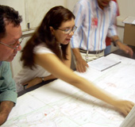
Secretaria da SEMMA,
Luciana Valente |
|
|
|
|
Forma do Parque começa a aparecer
As obras do futuro Parque Lagoa do
Japiím começaram a ganhar forma. Os prédios principais do complexo
já estão alicerçados e com fechamento parcialmente concluído. A
área onde serão construídas as quadras poliesportivas e extensão
do passeio para caminhadas está sendo aterrrada para que se atinja
o nivelamento especificado. Embora as chuvas ainda não tenham
parado, os períodos de estiagem começam a se prolongar, no
entanto, os momentos pós-chuva é um dos maiores complicadores.
Fique informado sobre a obra neste site. |
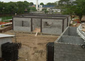
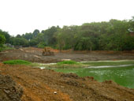
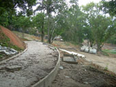
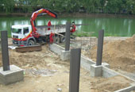
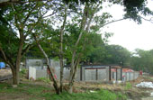 |
| |
|
| |
|
|
Identificação visual
A frota de
veículos da Fergel está recebendo um tratamento visual
personalizado. Foi desenvolvido um projeto gráfico base padrão que
apresentará pequenas variações de acordo com a categoria do
veículo. O objetivo da empresa é construir e consolidar a
identidade visual da empresa junto a sociedade local e aproveitar
o trânsito cotidiano da frota como um reforço na divulgação da
nossa marca. A idéia é a seguinte: “Lembre sempre da Fergel”. |
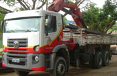
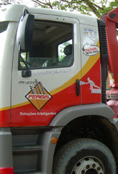 |
|
|
|
|
Sexteto de mulheres da o tom na
obra da Lagoa do Japiím
A força de
trabalho do sexo feminino está representada no canteiro de obras
do Parque da Lagoa do Japiím. Seis mulheres atuam na obra: 4
estagiárias em regime especial de horário de trabalho, Mara
(técnica em segurança de trabalho); Sônia (técnica em
edificações); Natasha (acadêmica finalista de engenharia civil); e
Luciana (engenharia ambiental). As outras duas são Luciana Andrade
(25) que é responsável pelo almoxarifado da obra e Carla que é
apontadora de uma empreitera terceirizada. A Fergel acredita na
capacidade da mulher com mão-de-obra eficaz e extremamente
responsável, especialmente por se tratar de um canteiro de obras,
que exige acuidade e senso organizacional aguçado. |
|
E S P E C I A L
BATOM NA OBRA
Luciana tem 25 anos e está a quatro
meses no quadro da Fergel. Trabalhando como o almoxarife, se diz
totalmente inserida no ambiente de trabalho. Acredita que as
mulheres possuem uma característica fundamental que é o
“detalhismo” na execução dos trabalhos a que se dedicam. Foi
contratada para a obra, e teve experiência anterior em lojas de
varejo do centro da cidade. Luciana considera o serviço muito
semelhante ao que desenvolvia, com funções de conferência e
checagem de mercadorias – diz que agora só muda o produto.
Luciana diz que gosta de trabalhar com
homens – algumas vezes são mais fáceis de lidar do que as
mulheres. Teoriza que isso deve ser porque foi criada entre
primos, e soltava papagaio, jogava peteca, bola e outras
brincadeiras.
A almoxarife é responsável pelo
controle de todo o material utilizado na obra e ferramental.
Confere também toda entrada e saída do que vai ser usado. É ela
que mantém o controle sobre os matérias de construção e faz as
solicitações quando estes estão precisando de reposição.
“Embora pareça um trabalho pesado, é
muito gratificante saber que o resultado do meu trabalho foi
essencial para a obra que vai servir a comunidade”, finalizou
Luciana. |
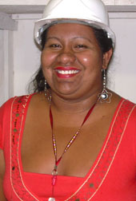 |
| |
|
|
Atualização (13 de
Maio)
As chuvas em
Manaus
Embora estejamos na
metade do mês de maio, o volume de chuvas ainda é intenso sob a cidade
de Manaus. Nos canteiros das obras da Fergel, as interrupções causadas
pelas chuvas são contornadas com a aplicação da força de trabalho em
outras frentes até o que o tempo permita realizar atividades externas.
|
| |
|
|
Na
UFAM
Os dois prédios das
faculdades de matemática e estatística já saíram do chão e estão se
preparando para as concretagens dos vigamentos superiores e de parte
das lajes de primeiro piso de um dos blocos. As etapas mais complexas
de fundações e alicerces foram superadas, de intervalo em intervalo,
durante o intenso período de chuvas que tem causado sérios transtornos
à cidade. Enquanto as chuvas não dão lugar ao verão, as operações no
canteiro da UFAM se utilizam das áreas cobertas e galpões de apoio
para a preparação de pré-moldados, carpintaria etc. |
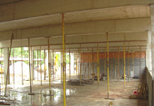
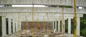
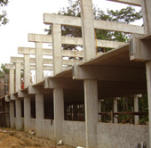 |
| |
|
| |
|
|
Na Lagoa do Japiím
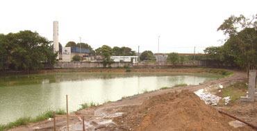 |
| |
|
|
Entre chuvas e
respingos, as obras no Parque Lagoa do Japiím avançam e já apresentam
visualmente uma idéia do que vai ser o complexo social daquela
comunidade. Já foram erquidas as estruturas dos blocos onde estarão os
escritórios administrativos e vestiários. E foram alicerçadas as
estruturas onde serão construídas as áreas de restaurante e do
complexo de serviços.
Na lagoa foram
executados os serviços de limpeza, de onde foram retirados boa parte
do “mureru” que tomava conta de toda a superfície, e realizados
serviços de retirada de lixo do fundo da lagoa. O excesso de chuva tem
toldado bastante a água da lagoa e até o final de obra deverá ocorrer
outra limpeza na área.
Alteração no projeto
Uma novidade na Lagoa
do Japiím é a alteração do projeto do auditório. Concebido
inicialmente para ficar numa estrutura sobre a lagoa, vai ser
construído numa das margens da lagoa que será estendida e possuirá uma
cobertura na forma de um guarda chuva invertido. |
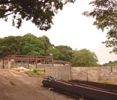
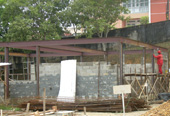
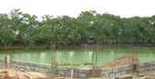
|
| |
|
|
LeMans
do distrito
A Fergel forneceu e
instalou toda a estrutura metálica da nova loja da locadora LeMans do
Distrito Industrial, desde os gradis externos às colunas e vigamentos
da loja. O projeto arquitetônico apresenta detalhes de aço expostos
que formam um corredor para acesso ao interior da loja. Vale a pena
conferir. |
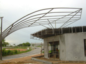
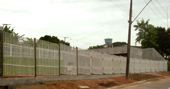 |
| |
|
| |
|
|
Athletic
foi entregue
O internauta e
clientes que acompanharam as atualizações do site da Fergel,
conferiram o avanço das obras na Indústria Athletic no Distrito
Industrial. A Fergel já finalizou todas as estruturas. Missão
cumprida.. |
| |
|
|
Notícias anteriores
>>>>>>>>>>
17 MARÇO
<<<<<<<<<<<<<<
•
Fergel inicia os
trabalhos de limpeza do meio aquático na Lagoa do Japiím
•
Obras na UFAM
•
Retroescavadeira JCB
no pátio
•
CIPA na Fergel
>>>>>>>>>> 29 FEVEREIRO
<<<<<<<<<<<<<<
•
Fergel entrega estrutura metálica da fábrica da
Yamaha
•
Fergel finaliza estruturas em Boa Vista
•
Antigo aeroporto de Ponta Pelada, hoje o 7º
Comar, recebe nova estrutura metálica
•
Fergel fabrica e monta guarda-corpo para viaduto
do Coroado
•
Fergel
adquire "retroescavadeira JCB"
>>>>>>>>>> 11
FEVEREIRO <<<<<<<<<<<<<<<<<
• Fergel reforma escadarias do Sambódromo em
tempo recorde para o desfile de 2008
• Fergel inicia os trabalhos de limpeza da área
do canteiro de obras do Parque Lagoa do Japiím
• Coletores Industriais de Resíduos e Caçambas
são novas vedetes do Parque Industrial da Fergel
• Fergel investe em caminhões especializados
para deslocamento de coletores e caçambas
• Guindaste Hidráulico Veicular
• As obras não param na Universidade do Amazonas |
|
A FERGEL É
FORNECEDORA CADASTRADA DO BNDES.
Sua
empresa pode financiar qualquer produto Fergel no BNDES.


• Porque Estruturas
Metálicas ? (avaliação comparativa entre o concreto e o aço)
• Como surgiu o aço depois
do ferro
• Para que serve o aço
• Dicionário da Construção
• Tabela de peso e medidas de aço pré-moldado
• Galpões e Armazéns

• Reciclagem
• O uso do aço para a natureza
• Legislação Ambiental |